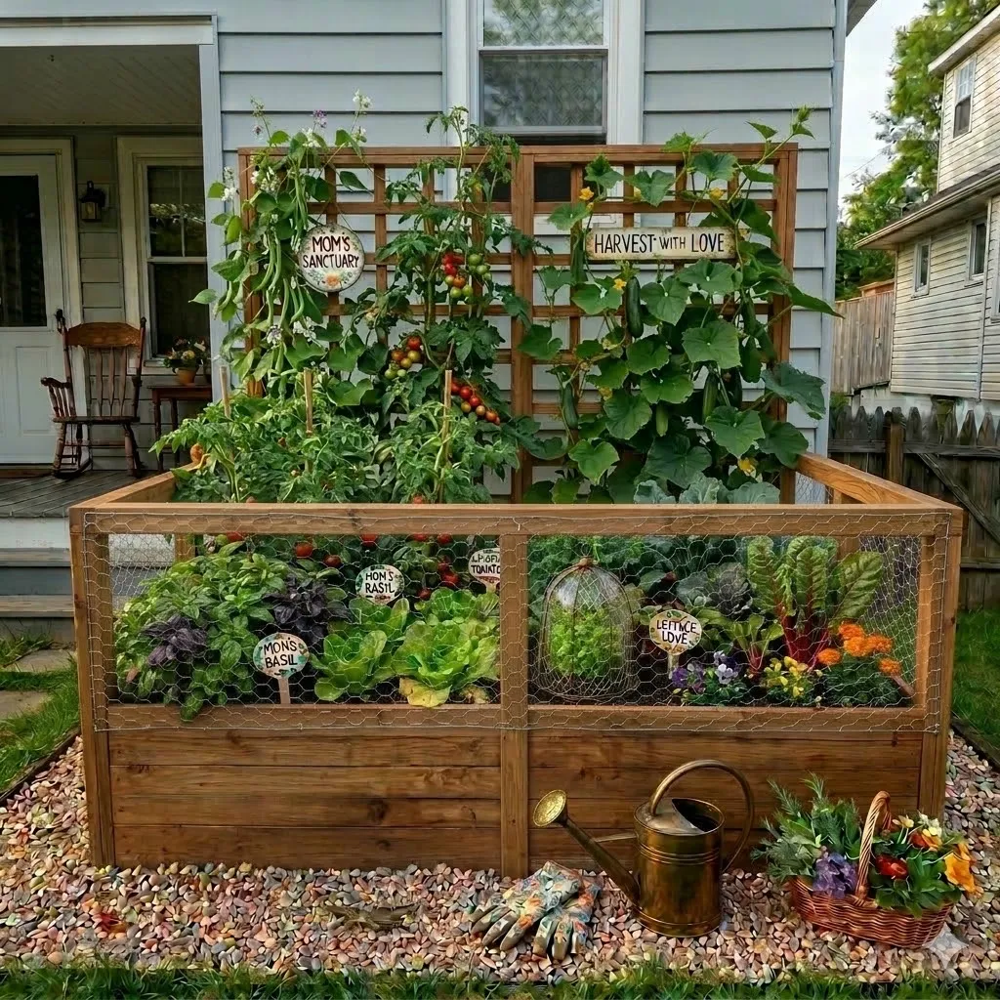
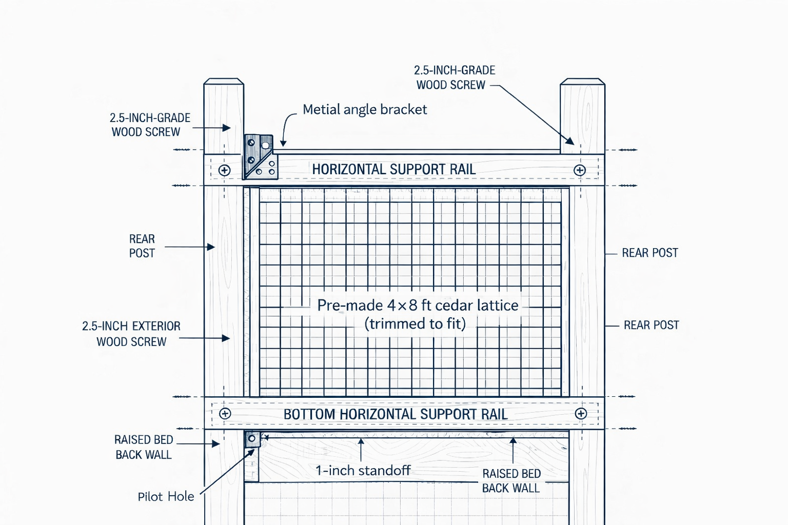
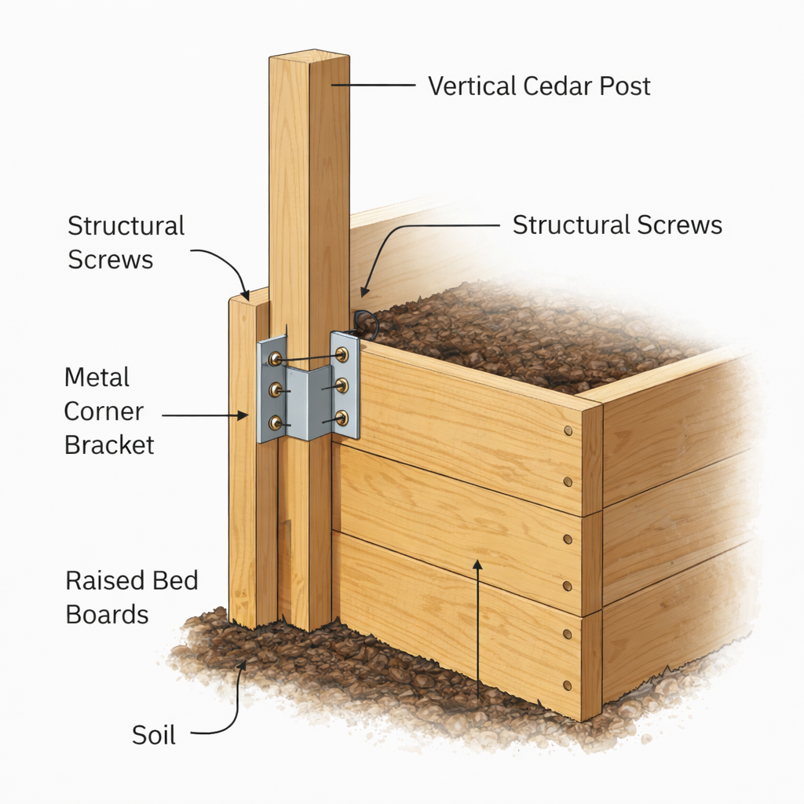
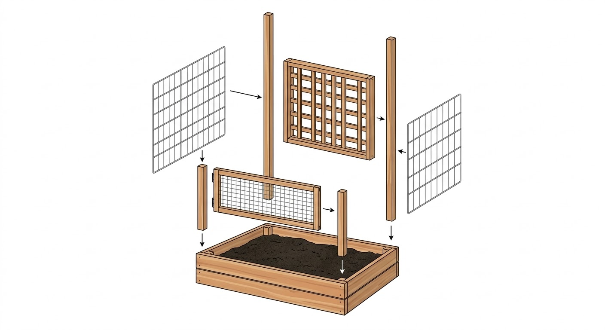
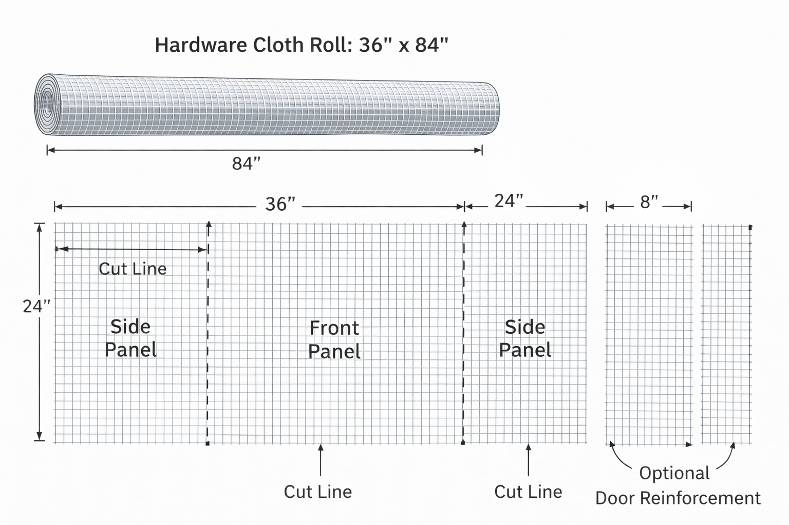
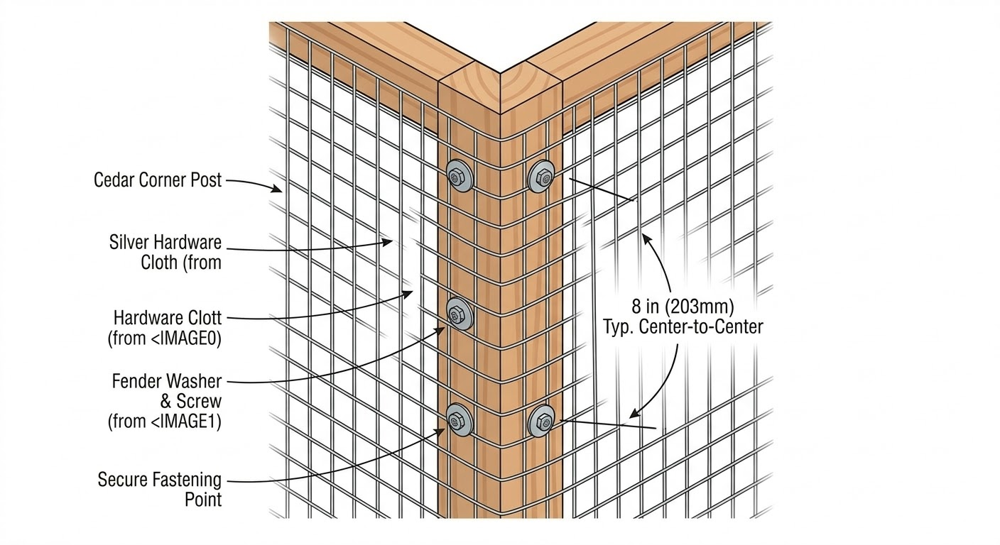
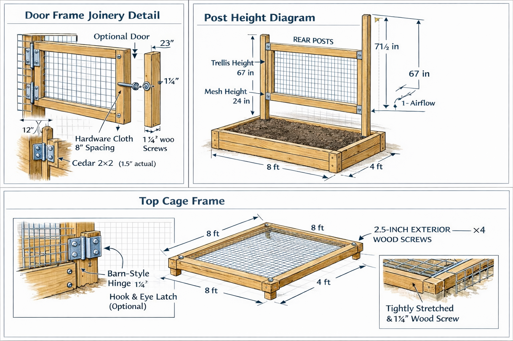
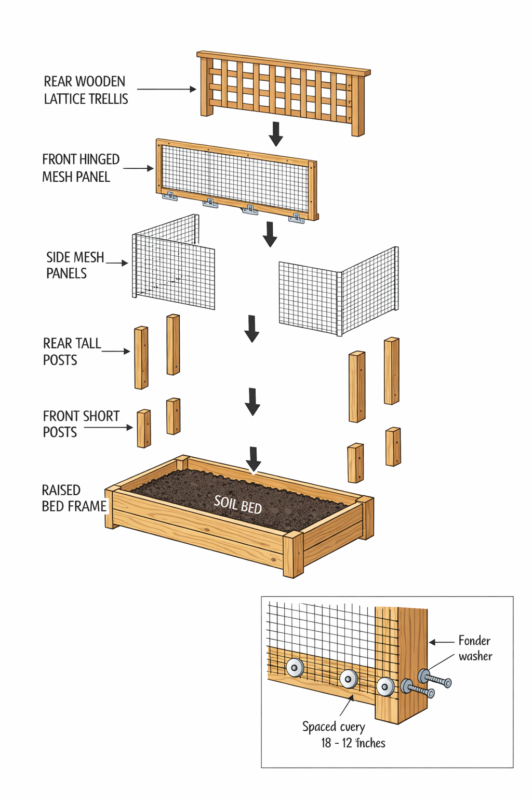

🪴
No results found
Try a different search — dimensions, materials, or task names work well.
Final Dimension Table
| Component | Dimension |
|---|---|
| Overall width | 96" (8 ft) |
| Overall depth | 48" (4 ft) |
| Corner posts above bed | 24" |
| Rear trellis posts above bed | 48" – 54" |
| Wire cage height (sides + front) | 24" |
| Trellis panel (back wall) | 48" – 54" × 96" wide |
| Wire mesh type | ½" hardware cloth or chicken wire |
| Front access | Hinged panel or lift-off, full width |
| Total corner posts | 4 (+ 2 tall rear trellis posts) |
Short Verdict
A rectangular raised bed cage with a tall wooden lattice trellis on the back wall and low wire panels on the front and sides. Climbers go up the back, greens stay protected in the front. No arch, no tunnel, no fancy carpentry. Cedar frame, wire mesh, a trellis panel, and some screws.
Assumption: An 8×4 ft raised bed already exists. The cage and trellis mount directly to the bed frame or sit flush against its outer edges.
Front Elevation — 96" wide
FRONT ELEVATION
overall width = 96"
← ——————————— 96" (8 ft) ——————————— →
[post] [post]
| |
| wire mesh (hardware cloth |
| or chicken wire) | 24" above
| ~~~~~~~~~~~~~~~~~~~~~~~~~~~~ bed top
| ~~~~~~~~~~~~~~~~~~~~~~~~~~~~|
+---------- bed frame ----------+
| raised bed (8 × 4 ft) |
+-------------------------------+
Front panel: hinged at bottom or
lift-off for full-width access.
Trellis rises behind — see side view.
Side Elevation — 48" deep
SIDE ELEVATION
overall depth = 48"
front back
| |
↓ ↓
[tall post 48-54"]
| |
| trellis |
| lattice |
| panel |
[short post 24"] | |
| | |
| wire mesh 24" | trellis |
|~~~~~~~~~~~~~~~~~~~~~~~~~~| |
+---------- bed frame -----+----------+
| raised bed |
+--------------------------+
Short posts (front corners): 24" above bed
Tall posts (rear): 48–54" above bed
Trellis bolts flat to rear posts
Rear Elevation — Trellis Wall
REAR ELEVATION
trellis wall = 96" wide
← ——————————— 96" (8 ft) ——————————— →
[tall post] [tall post]
| ┌─┬─┬─┬─┬─┬─┬─┬─┐ |
| │ │ │ │ │ │ │ │ │ | 48–54"
| ├─┼─┼─┼─┼─┼─┼─┼─┤ | above
| │ │ │ │ │ │ │ │ │ | bed
| ├─┼─┼─┼─┼─┼─┼─┼─┤ |
| │ │ │ │ │ │ │ │ │ |
| └─┴─┴─┴─┴─┴─┴─┴─┘ |
+---------- bed frame -------+
Lattice panel (cedar or treated)
screwed to rear posts.
Climbers: tomatoes, beans, peas, cukes.
Top View — Zone Layout
TOP VIEW — 96" × 48"
FRONT (access side)
↓
+-------------------------------+
| ~~~ wire mesh front panel ~~~| ← hinged
| |
| PROTECTED FRONT ZONE |
| lettuce · basil · herbs |
| radish · arugula · bok choy |
| |
|-------------------------------|
| TRELLIS ROW (back edge) |
| tomatoes · beans · peas |
| cucumbers trained upward |
+-------------------------------+
↑
BACK (trellis wall)
Wire mesh on front + both sides (24" tall).
Trellis panel spans full back wall.
Post Layout — 6 Posts
FRONT BACK
[FL 24"] [optional FC 24"] [FR 24"]
· · ·
· · ·
[BL 54"] [optional BC 54"] [BR 54"]
Front posts: 24" above bed top
Back posts: 48–54" above bed top
Center posts optional — add if bed
is wider than 6 ft or for rigidity.
All posts: 2×4 or 4×4 cedar/treated.
Construction Drawings








Lumber Cut List
| Part ID | Description | Material | Nominal Size | Cut Length | Qty |
|---|---|---|---|---|---|
| P1 | Front posts | Cedar 2×4 | 1.5"×3.5" | 24" above bed | 2 |
| P2 | Rear posts | Cedar 2×4 | 1.5"×3.5" | 48"–54" above bed | 2 |
| R1 | Front/back top rails | Cedar 2×2 | 1.5"×1.5" | 96" | 2 |
| R2 | Side top rails | Cedar 2×2 | 1.5"×1.5" | 45" | 2 |
| R3 | Trellis support rails | Cedar 2×2 | 1.5"×1.5" | 96" | 2 |
| D1 | Door frame pieces | Cedar 2×2 | 1.5"×1.5" | 96" (cut to fit) | 2 |
| T1 | Lattice panel | Cedar lattice | 4×8 ft | Trim to fit | 1 |
Hardware
| Item | Specification | Qty |
|---|---|---|
| Metal corner brackets | 3" galvanized | 4–6 |
| Structural screws | 2.5" exterior grade | 40 |
| Wood screws | 1.25" exterior | 24 |
| Fender washers | 1" galvanized | 20 |
| Hardware cloth | ½" mesh, 36"×84" roll | 1 |
| Barn-style hinges | 1.25" | 2–3 |
| Hook & eye latch | Galvanized | 1–2 |
| Metal angle brackets | For trellis rail | 4 |
Mesh strategy: Wire mesh covers the front and both sides to 24" height. The back is covered by the trellis panel — no mesh needed there. Hardware cloth is more critter-proof; chicken wire is lighter and easier to work with.
Lumber connections — exterior deck screws
Use 2½" to 3" exterior deck screws for all post-to-rail and post-to-bed connections. Pre-drill near ends to avoid splitting.
Wire mesh — staple first, then fender washers
Staple to position and tension. Then add screws with fender washers every 8–12" along all edges. Staples alone pull out over time.
Trellis panel — screwed to rear posts
Lattice panel screws directly to the inside face of the rear posts with 2½" exterior screws. Pre-drill the lattice to prevent splitting. Check plumb before final fastening.
Front panel hardware — hinges + latch
2–3 exterior hinges along the bottom edge of the front wire panel (hinge at bed frame for drop-down access). Hook-and-eye latch at top to hold panel closed.
Measure actual outer dimensions of the bed
Do not assume 96"×48". Measure before cutting anything. Mark your numbers on the sketch. DIY beds rarely hit exact dimensions.
Cut front corner posts — 24" above bed top
Two front posts at 24" above the bed frame. If bolting to the inside or outside of the bed, add the bed wall thickness to your cut length.
Cut rear trellis posts — 48–54" above bed top
Two rear posts, tall enough for the trellis panel. These are the tallest pieces in the structure. Account for any burial or bolt-through depth.
Set and brace all four corner posts
Bolt or screw to the bed frame. Check plumb on both axes before final fastening. Front posts sit at the front corners, rear posts at the back corners. Temporary diagonal bracing helps while you work.
Install horizontal top rails — front and both sides
Connect the tops of the front and side posts with horizontal rails. Front rail runs 96". Side rails run 48" from front post to rear post. These define the top edge of the wire mesh panels.
Attach wire mesh to both side panels
Cut wire mesh (hardware cloth or chicken wire) to fill the 24" tall × 48" deep side panels. Staple under tension first, then screw fender washers every 8–12" along all edges for real hold.
Build the front wire panel as a separate frame
Build a rectangular frame (96" × 24") from 1×3 or 2×2 stock. Stretch wire mesh across it and staple + washer. This panel will hinge at the bed frame for access.
Hinge front panel to bed frame
Attach 2–3 exterior hinges along the bottom edge of the front panel. The panel drops down for full-width access. Add a hook-and-eye latch at the top to hold it closed.
Check all wire edges — clip and fold sharp ends
Wire mesh cut edges are sharp. Fold exposed wire ends with pliers or cover with wood strips. Do this before anything else goes near the structure.
Trellis options: A pre-made cedar lattice panel is the fastest route. Alternatively, build a grid from 1×2 lath strips screwed together. Either way, the panel bolts flat to the inside face of the rear posts.
Measure the opening between rear posts
Measure the inside face-to-face distance between the two rear posts. The trellis panel should fit snug between them or overlap slightly onto the post faces.
Cut or trim lattice panel to fit
If using a store-bought 4×8 lattice, cut to match the opening width (~96") and the post height above the bed (48–54"). Sand or seal any cut edges.
Screw trellis panel to rear posts
Pre-drill and screw the lattice panel to the inside face of both rear posts using 2½" exterior screws. Space fasteners every 12–16". Panel should sit flush against the posts with the bottom edge resting on or just above the bed frame.
Add a horizontal top rail across the rear posts
A 1×3 or 2×2 rail across the top of the rear posts ties them together and caps the trellis panel. This also prevents racking. Screw into the top of each post.
Check trellis is plumb and rigid
Push on the top of the trellis — it should not flex more than an inch. If it wobbles, add a diagonal brace from the top of each rear post down to the bed frame on the sides.
Test front panel hinge operation
Open and close the front panel fully. It should drop down or swing out without binding. Check that the latch engages cleanly from outside. Adjust hinge screws if needed.
Check for gaps between panels and bed frame
Walk the full perimeter. Look for any gap larger than ½" between the wire mesh and the bed frame. Rabbits and squirrels will find gaps. Fill with extra mesh, a wood strip, or foam backer rod.
Verify trellis is secure and plumb
Grab the top of the trellis and push. It should feel solid. If it flexes, add a diagonal brace from each rear post top down to the bed frame on the sides.
Final wire edge audit — clip and fold all sharp ends
Walk the whole structure. Every cut wire end gets clipped flush or bent back with pliers. Do not skip this. You will hit these with your arm eventually.
Tighten all screws and check for loose connections
Go through every screw connection — posts to bed, rails to posts, mesh washers. Snug anything that feels loose. Re-check plumb on corner posts after tightening.
Optional: add bird netting across the top
If birds are a problem, drape lightweight bird netting from the trellis top rail forward to the front post rail. Clip or tie at the edges. This is optional — the wire sides already stop ground critters.
Optional: stain or seal exposed wood
If using untreated cedar, a clear exterior sealant or light stain extends life. If using pressure-treated lumber, skip this — it's already weather-resistant. Do this before planting to avoid drip on soil.
Train climbing crops onto the trellis
Tomatoes, pole beans, peas, and cucumbers go in the back row. Loosely tie seedling stems to the lattice with twine or soft plant ties. They'll grab the grid within a week or two.
Plant protected front zone
Basil, lettuce, herbs, radish, and arugula go in the front rows behind the wire mesh. These stay low and benefit from critter protection. White mesh baskets over small seedlings if squirrels are aggressive early.
Pre-Build
All lumber cut to spec per Table 1
Hardware cloth cut per Sheet 4 layout
All hardware on hand per Table 2
Raised bed is level and square (diagonal measurement)
Post positions marked on bed frame
Post-Build
All posts plumb (check with level)
Frame is square (diagonal check on top rails)
Hinge alignment — door swings freely without binding
Latch engages cleanly from outside
Mesh tension — no gaps >½" at edges or corners
All screw heads flush, no protrusions
Trellis panel secure, no racking under hand pressure
1" airflow gap confirmed at bottom